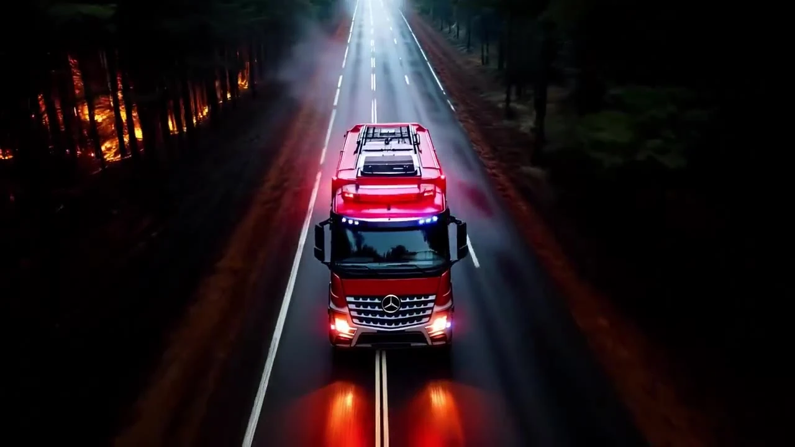
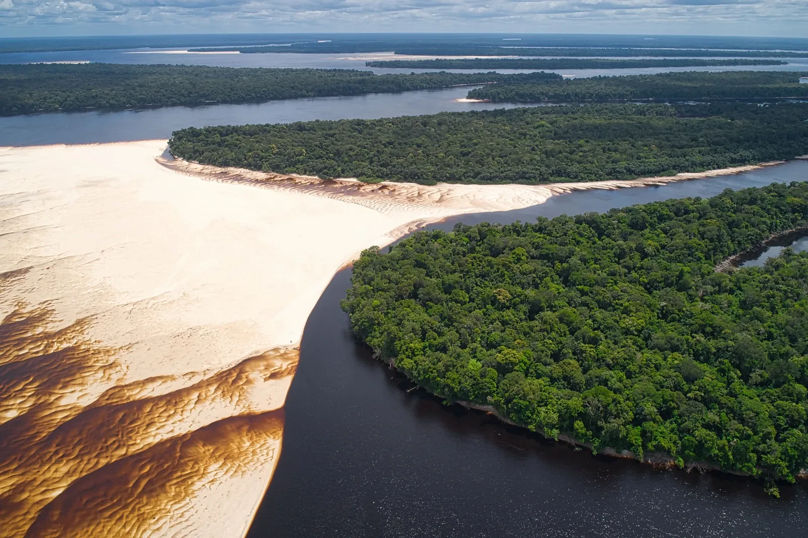
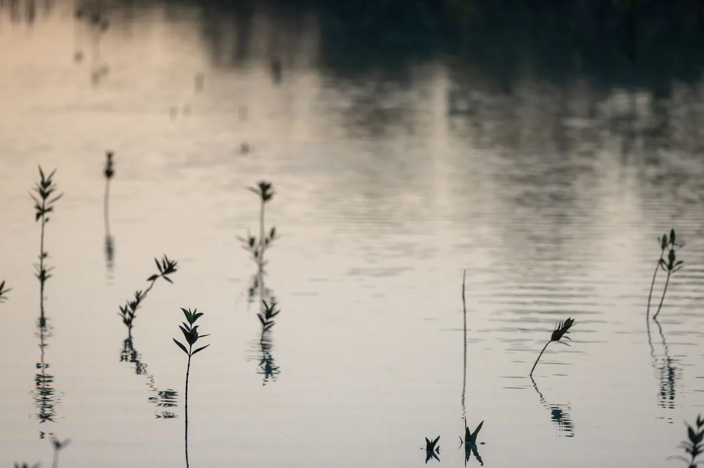
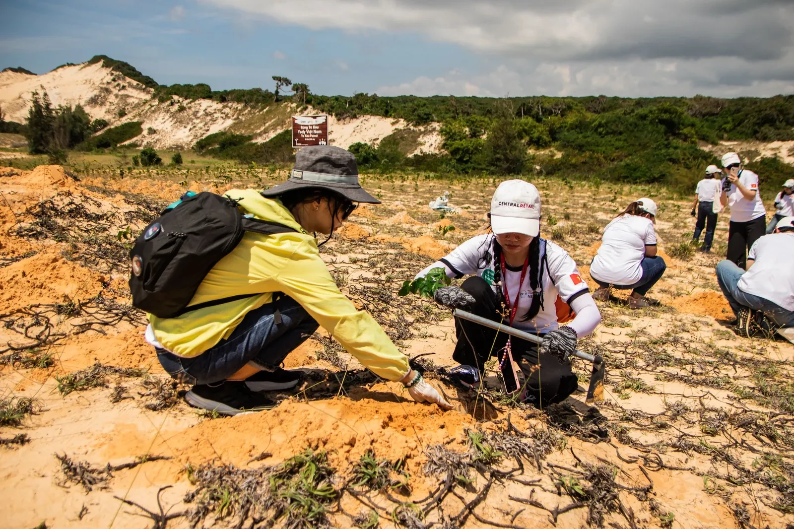
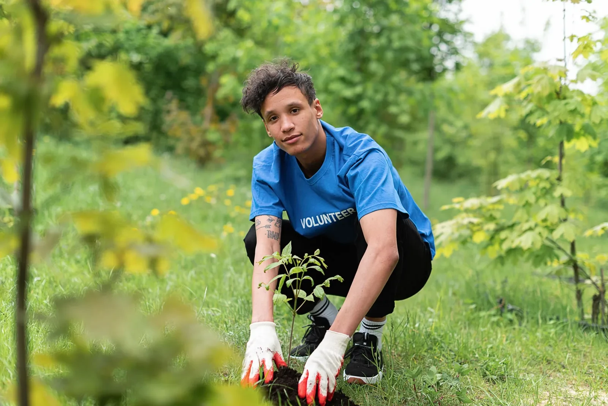
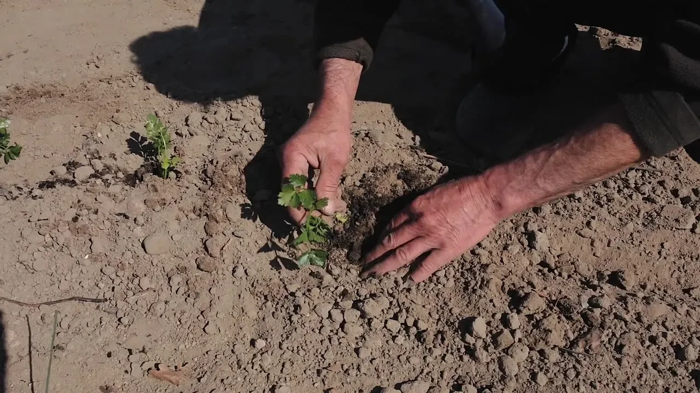
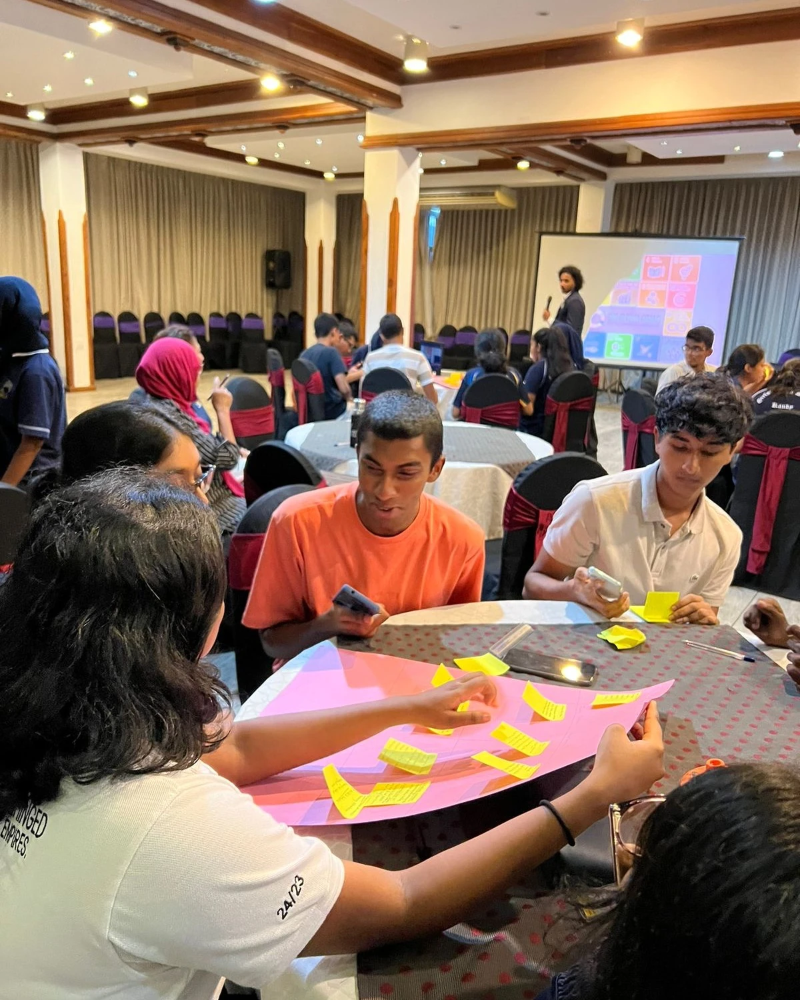
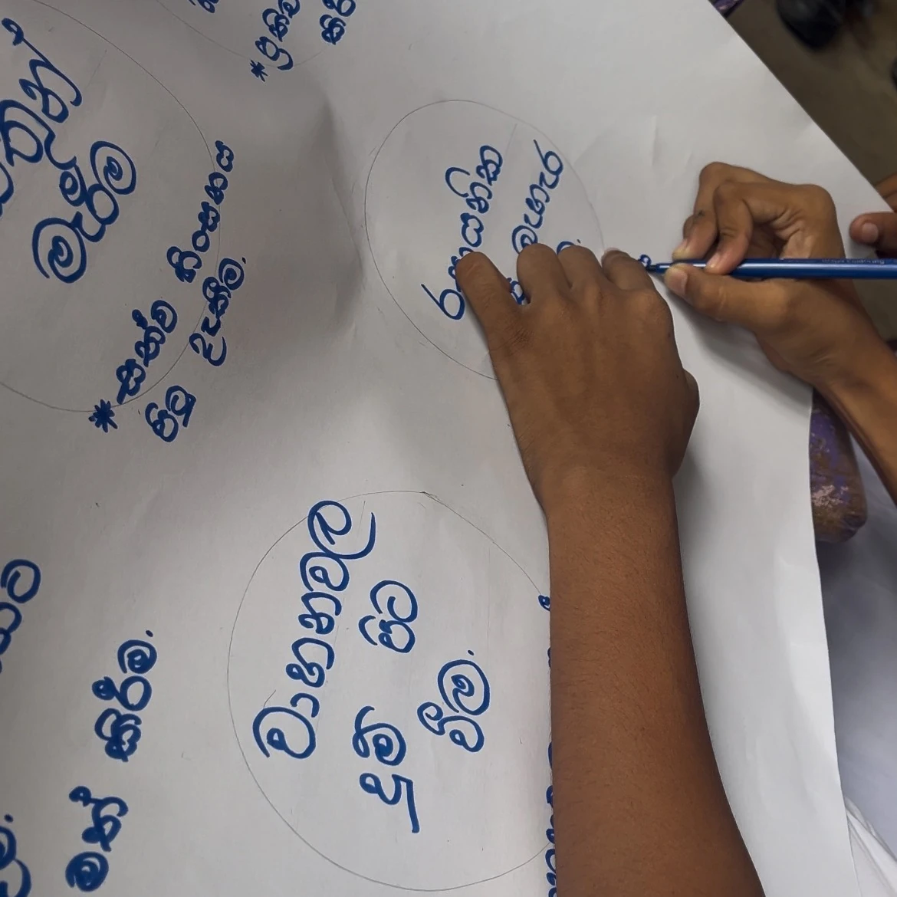
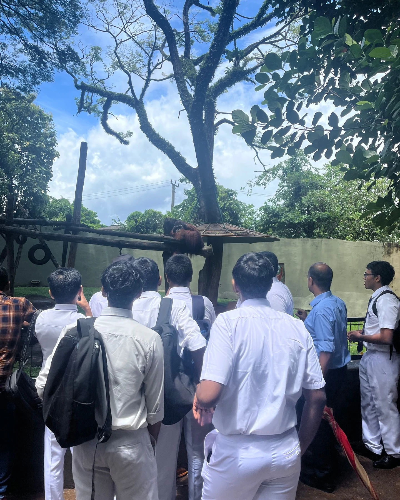
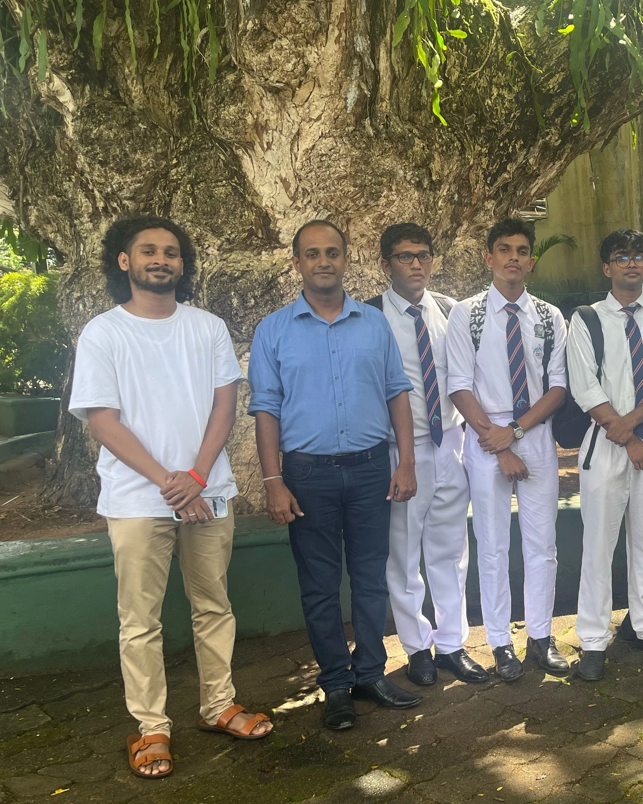

Emergency relief aid
Food, clean water, temporary shelter, medical supplies and coordinated first response help stabilise immediate needs.
CuteFela’s Disaster Response initiative links immediate relief with reconstruction, rehabilitation and community resilience in Sri Lanka.
The programme framework is organised around emergency relief, reconstruction and rehabilitation, and community resilience. Each stage answers a different need while supporting the same goal of safer recovery.
Food, clean water, temporary shelter, medical supplies and coordinated first response help stabilise immediate needs.
Recovery supports damaged services, temporary facilities and livelihoods while communities restore safe daily life.
Preparedness training, early warning awareness and sustainable livelihoods can reduce vulnerability before the next emergency.
Emergency support works best when response teams can reach affected areas, understand local conditions and connect people with essential supplies and services quickly.



Reconstruction is not only about replacing what was damaged. It is also an opportunity to restore services, strengthen natural buffers and support livelihoods in ways that reduce future risk.
Temporary facilities, repair work, land restoration and practical livelihood support can all form part of the recovery period.



Awareness sessions, local planning, field learning and practical exercises help people understand risk before an emergency. The aim is to turn information into decisions that can be used when conditions change quickly.




Floods, landslides, cyclones and coastal erosion can affect homes, water, transport, livelihoods and ecosystems at the same time. Environmental degradation and poorly planned development can also increase risk.
That is why relief, recovery and preparedness need to be connected. A strong response meets urgent needs while also looking for practical ways to reduce the impact of the next emergency.